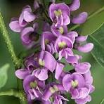
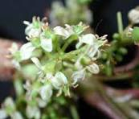
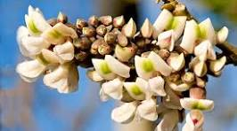
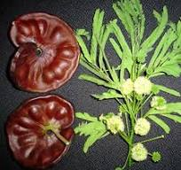
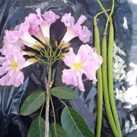

PLANTAS ENDÉMICAS DE YUCATÁN
Las plantas endémicas son aquellas especies vegetales que solo
se encuentran naturalmente en un área geográfica especÁfica,
como un país, una región o incluso un lugar especáfico. En Yucatán,
algunas plantas endémicas incluyen el Balché (Lonchocarpus longistylus),
el Chaká (Bursera simaruba), el Jabín (Piscidia piscipula), el Pich
(Enterolobium cyclocarpum), también conocido como guanaxtle, huanacaxtle
o parota y el Makuilis Rosa también conocido como apamate o guayacán rosado

Es una especie endémica de la Península
de Yucatán, México,
conocida por su uso ceremonial y medicinal por la cultura maya.
Se trata de un árbol de hasta 10 metros de altura, con follaje
denso y redondeado, flores lila-morado y frutos en forma de vainas
planas.

Se refiere a una especie de árbol nativo de América Tropical,
con presencia en México, especialmente en zonas cálidas y el
sureste del país, que ha tenido una importancia cultural y medicinal
en la región.

Es un árbol tropical caducifolio de la familia Fabaceae,
conocido por
su madera de buena calidad y sus múltiples usos, incluyendo la apicultura
y la medicina tradicional.

Árbol grande y llamativo, caducifolio, de 20 a 30 m. de altura,
follaje abundante,
hojas bipinnadas los foliolos se pliegan en la noche, ramas ascendentes, corteza
lisa a granulosa gris clara con abundantes lenticelas alargadas; flores en pequeñas
cabezuelas pedunculadas actinomórficas, caliz verde y tubular, corola verde clara,
florece de marzo a mayo; el fruto es una vaina circular indehiscente de 7 a 15 cm.

Se refiere a un árbol nativo de América Central y
Sudamérica, conocido por sus llamativas
flores rosadas o lila. Es un árbol ornamental muy apreciado, que florece durante la época
seca y se usa en espacios públicos y jardines.
Derechos Reservados © Gaby-Gera-Manu
|